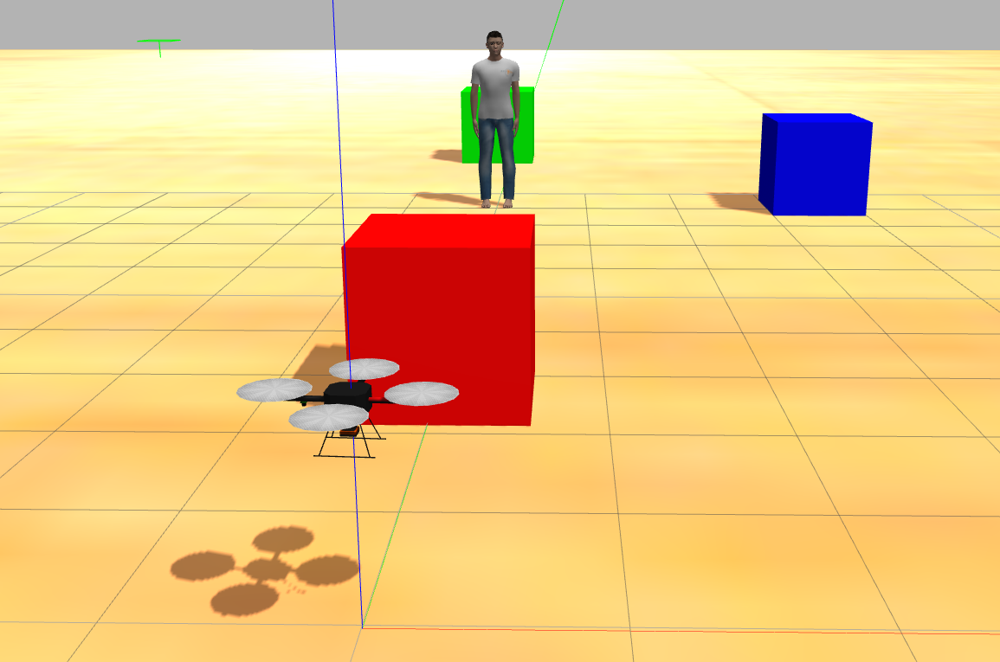

Automated Cinematography Motion Planning for UAV's
Implemented a Motion Planning algorithm on a quadrotor to find a path in an environment while avoiding obstacles and capturing images of the environment.
Project Outline:
This project was aimed to develop an automated cinematography platform using an unmanned aerial vehicle. Quadcopters are a great platform for shooting aerial scenes but are difficult to maneuver smoothly and can require expertise to pilot. Given the location of an object and other obstacles in the environment, the drone is able to plan its trajectory while simultaneously avoiding obstacles and capturing the desired area in the camera.
Methodology
Our chosen method for path planning uses a local RRT* planner variant for obstacle avoidance while following pre-computed global paths in order to achieve a desired camera shot. ROS services provides the location of all obstacles in the environment and the location of the quadrotor. The location combined with geometric data about the obstacles are used to perform obstacle detection. The first part of the algorithm involves feeding a desired motion plan to the path planner. This can take many forms such as a simple point-to-point linear motion, or an arcing motion in which the quadrotor moves around a target in a circular motion. This arcing motion is one of many possible standard camera motions and one we chose to implement and focus on. The method uses circular interpolation in order to compute a smooth motion path around the target. The algorithm is fed the starting point, the ending point, and the target location and outputs an arc as a series of intermediate locations which connect the two points while keeping the target in the center.

Results:
This yeilded a global on operator defined shots as well as a local, expanding, RRT* variant for obstacle avoidance. The planner acts by taking in or generating a desired motion path for the camera. This is then searched for discontinuities where obstacles obstruct the desired path. A local RRT* path planner is applied to these sections of the path and the final, obstacle free path is output. Finally, the environment, and the quadcopter and its motion are simulated and visualized in ROS